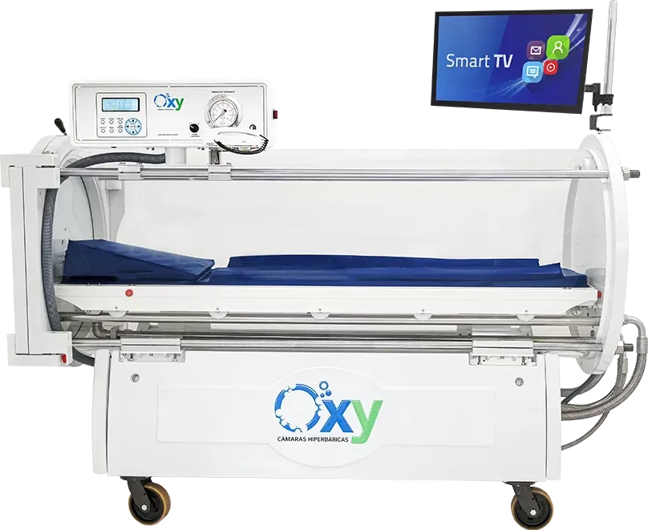

É um tratamento baseado na inalação de oxigênio puro em ambiente pressurizado, acelerando processos biológicos essenciais.
Tudo com equipamento de ponta e certificação da ANVISA. Uberaba agora conta com a câmara hiperbárica mais moderna do Brasil.

A alta oxigenação estimula a regeneração celular e a formação de novos vasos, promovendo cicatrizações mais rápidas e eficientes.
O oxigênio sob pressão reduz edema e modula a resposta inflamatória, aliviando dor e otimizando a recuperação.
O ambiente hiperóxico favorece a síntese de colágeno, essencial para regeneração de pele e tecidos moles.
Melhora a integração de enxertos e acelera a recuperação de feridas, diminuindo o risco de necrose ou rejeição.
Inibe bactérias anaeróbias e potencializa a ação dos antibióticos, ajudando no controle de infecções cirúrgicas.
Favorece a oxigenação de áreas com má perfusão, acelerando a regeneração de vasos, músculos e tecidos comprometidos.
A OHB prepara o couro cabeludo com maior oxigenação e vascularização, melhorando a saúde dos tecidos e criando um ambiente ideal para receber os folículos.
Após o procedimento, a OHB acelera a cicatrização, reduz inflamações e edemas, diminui o risco de infecção e favorece a fixação dos enxertos, aumentando a taxa de sucesso.